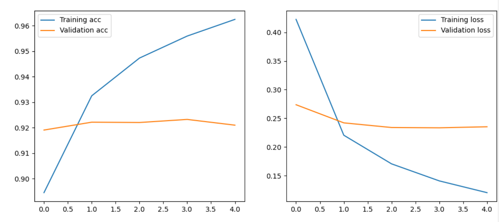
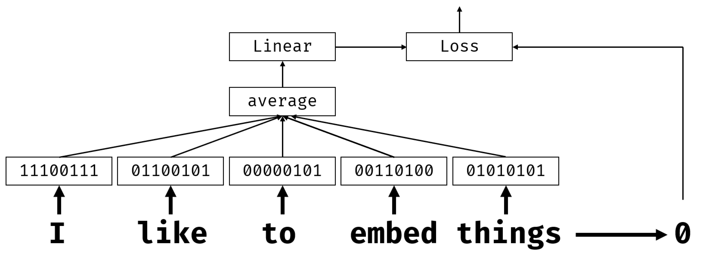
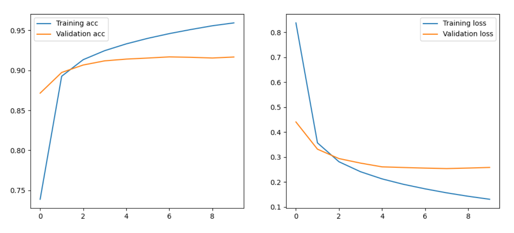
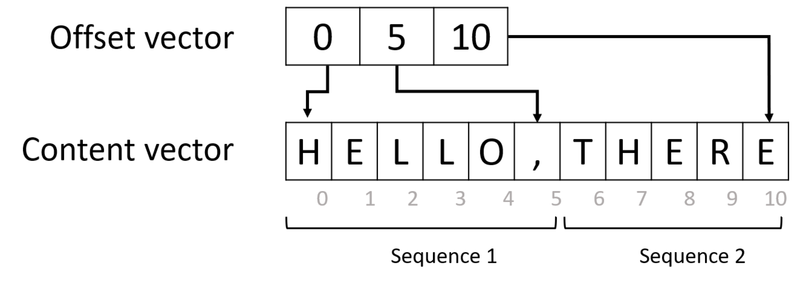
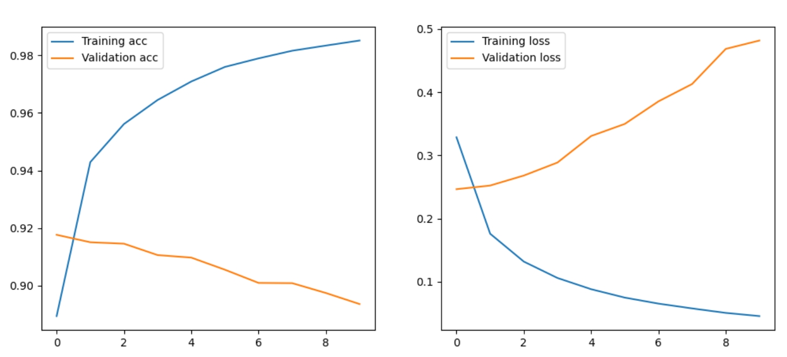
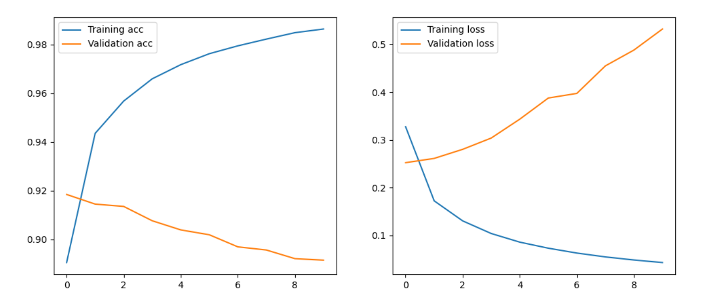

Natural Language Processing - Bag of Word && Embedding
Introduction
近年来，自然语言处理（NLP）作为一个领域经历了快速增长，主要是因为语言模型的性能取决于其 "理解 "文本的整体能力，并且可以在大型文本库上以无监督的方式进行训练。因此，预训练的文本模型，如BERT，简化了许多NLP任务，并极大地提高了性能。
本文专注于在PyTorch中把NLP表示为张量的基本方面，以及经典的NLP架构，如 bag-of-words, embeddings and recurrent neural networks
Natural Language Tasks
Text Classification: 常用于需要将文本片段分类为几个预定义类之一的场景，例如，垃圾邮件检测、新闻分类、将支持请求分配给其中一个类别等等。
Intent Classification：Text Classification 的特例，将对话式人工智能系统中的输入语料映射到代表该短语实际含义的意图之一，或用户的 intent。
Sentiment Analysis：一个回归任务，我们想了解给定文本的消极程度。我们可能想把数据集中的文本从最负面的（-1）到最正面的（+1）进行标记，并训练一个模型，输出一个文本的 "正面性 "数字。
Named Entity Recognition (NER)：从文本中提取一些实体的任务，如日期、地址、人名等。与意图分类一起，NER经常被用于对话系统，从用户的话语中提取参数。
keyword extraction ：在文本中找到最有意义的词，然后可以将其用作标签。
Text Summarization：提取最有意义的文本片段，为用户提供包含大部分含义的摘要
Question/Answer： This model gets text fragment and a question as an input, and needs to find exact place within the text that contains answer. For example, the text "John is a 22 year old student who loves to use Microsoft Learn", and the question How old is John should provide us with the answer 22.
Text Classification
- Understand how text is processed for natural language processing tasks
- Get introduced to Recurrent Neural Networks (RNNs) and Generative Neural Networks (GNNs)
- Learn about Attention Mechanisms
- Learn how to build text classification models
Representing text as Tensors
In order to solve NLP tasks with neural networks, we need some way to represent text as tensors. Computers already represent textual characters as numbers that map to fonts on your screen using encodings such as ASCII or UTF-8
Computers by themselves do not have such an understanding of what each letter represents, neural network has to learn the meaning during train
Approaches of representing text:
- Character-level representation: treating each charater as a number. Given that we have C different characters in our text corpus, the word Hello would be represented by 5xC tensor (One-Hot encoding).
- Word-level representation: creating a vocabulary of all words in text, then representing words using one-hot encoding. This approach is somehow better, because each letter by itself does not have much meaning, and thus by using higher-level semantic concepts - words - we simplify the task for the neural network. However, given large dictionary size, we need to deal with high-dimensional sparse tensor.
Dataset
Start with a simple text classification task based on AG_NEWS dataset, which is to classify news headlines into one of 4 categories: World, Sports, Business and Sci/Tech. This dataset is built into torchtext module
1 | os.makedirs(root, exist_ok=True) |
train_dataset and test_dataset contain iterators that return pairs of label (number of class) and text respectively, if we want to use the data multiple times we need to convert it to list
1 | from torchtext.data.functional import to_map_style_dataset |
Convert text into numbers so that can be represented as tensor. (Word-level representation)
- use tokenizer to split text into tokens
- build a vocabulary of these tokens
1 | def get_vocab(type='bow'): |
bag of words text representatiion
Because words represent meaning, sometimes we can figure out the meaning of a text by just looking at the individual words, regardless of their order in the sentence. For example, when classifying news, words like weather, snow are likely to indicate weather forecast, while words like stocks, dollar would count towards financial news.
Bag of Words (BoW) vector representation is the most commonly used traditional vector representation. Each word is linked to a vector index, vector element contains the number of occurrences of a word in a given document. But, BoW does not consider the sequence of words in text
Example:
John likes to watch movies. Mary likes too.
John also likes to watch football games.
Dictionary:
{"John": 1, "likes": 2, "to": 3, "watch": 4, "movies": 5, "also": 6, "football": 7, "games": 8, "Mary": 9, "too": 10}
Transform : the vector element means the number of occurrences of a word in a given sentence
[1, 2, 1, 1, 1, 0, 0, 0, 1, 1]
[1, 1, 1, 1, 0, 1, 1, 1, 0, 0]
1 | def bag_on_words(x): |
Since often vocabulary size is pretty big, we can limit the size of the vocabulary to most frequent words.
Training BoW classifier
convert dataset for training in such a way, that all positional vector representations are converted to bag-of-words representation. This can be achieved by passing bowify function as collate_fn parameter to standard torch DataLoader:
1 | # this collate function gets list of batch_size tuples, and needs to |
One linear layer
Now let's define a simple classifier neural network that contains one linear layer. The size of the input vector equals to vocab_size, and output size corresponds to the number of classes (4). Because we are solving classification task, the final activation function is LogSoftmax().
1 | class OneLinearLayer(nn.Module): |
training
Standard training loop
1 | def train(net, training_dataloader, test_dataloader, optimizer=None, loss_fn=nn.CrossEntropyLoss()): |

BiGrams, TriGrams and N-Grams
Bag-of-Words 方法的一个局限性是，有些词是多词表达的一部分，例如，"热狗 "这个词与其他语境中的 "热 "和 "狗 "的含义完全不同。如果我们总是用相同的向量来表示 "热 "和 "狗 "这两个词，就会使我们的模型混乱。
N-gram 表示经常用于文档分类的方法中，其中每个word、bi-word 或 tri-word 的频率是训练分类器的有用特征。例如，在大词表征中，除了原始词之外，我们将把所有的词对加入到vocabulary中。
1 | bigram_vectorizer = CountVectorizer(ngram_range=(1, 2), token_pattern=r'\b\w+\b', min_df=1) |
N-gram方法的主要缺点是，词汇量开始极速增长。在实践中，我们需要将N-gram表示法与一些降维技术结合起来，如embeddings 技术。
1 | tokenizer = torchtext.data.utils.get_tokenizer('basic_english') |
Term Frequency Inverse Document Frequency (TF-IDF)
在BoW表示法中，无论单词本身如何，单词出现的权重是均匀的。然而，很明显，频繁出现的词，如a、in等，对于分类来说，其重要性远远低于专业术语。事实上，在大多数NLP任务中，有些词比其他词更有意义。
TF-IDF是 bag of words 的一个变种，用一个浮点值代替表示一个词在文档中出现的二进制0/1值，它与语料库中的词出现频率有关。
the weight \(w_{ij}\) of a word \(i\) in the document \(j\) is defined as:
\[ w_{ij} = tf_{ij}\times\log({N\over df_i}) \]
where
- \(tf_{ij}\) is the number of occurrences of \(i\) in \(j\), i.e. the BoW value we have seen before
- \(N\) is the number of documents in the collection
- \(df_i\) is the number of documents containing the word \(i\) in the whole collection
TF-IDF value \(w_{ij}\) increases proportionally to the number of times a word appears in a document and is offset by the number of documents in the corpus that contains the word, which helps to adjust for the fact that some words appear more frequently than others.
For example, if the word appears in every document in the collection, \(df_i=N\), then \(w_{ij}=0\), and those terms would be completely disregarded.
然而，即使TF-IDF表示法为不同的词提供频率权重，它们也无法表示意义或顺序。正如著名的语言学家J.R.Firth在1935年所说："一个词的完整意义总是与上下文有关的，离开了上下文，对意义的研究就无法认真对待"。
Represent words with embeddings
One-hot 表示法不具有记忆效率，此外，每个词都是独立处理的，即 one-hot 编码向量不表达词之间的任何语义相似性。Enbedding 的想法是用低维的密集向量来表示 word ，这在某种程度上反映了一个词的语义。我们将在后面讨论如何建立有意义的单词嵌入，但现在我们只把嵌入看作是降低单词向量维度的一种方法。
embedding layer 将接受一个词作为输入，并产生一个 embedding_size 的输出向量。从某种意义上说，它与线性层非常相似，但它不是取一个 one-hot 的向量，而是取一个 word number ( word 在vocabulary 中出现的位置 ) 作为输入。
embedding向量的性质是能使距离相近的向量对应的物体有相近的含义，比如 Embedding(复仇者联盟)和Embedding(钢铁侠)之间的距离就会很接近，但 Embedding(复仇者联盟)和Embedding(乱世佳人)的距离就会远一些。
通过使用embedding layer作为我们网络中的第一层，我们可以从 bag of words model转换为embedding bag model ，我们首先将文本中的每个字转换为相应的embeddings，然后计算所有这些 embeddings 的一些集合函数，如sum、average或最max。

1 | class EmbedClassifier(torch.nn.Module): |
Dealing with variable sequence size
由于这种架构，对我们的网络的minibatches需要以某种方式创建。在上一个单元中，当使用bag of words时，不管我们的文本序列的实际长度如何，minibatch中的所有BoW张量都具有相同的大小vocab_size。
一旦我们使用 embedding，我们最终会发现每个文本样本中的字数是不一样的，当把这些样本合并成minibatch时，我们必须应用一些填充。这可以通过向数据源提供collate_fn函数的相同技术来完成。
1 | def padify(b): |
train
1 | if __name__ == "__main__": |

Embedding Bag Layer and Variable-Length Sequence Representation
上面，我们需要将所有序列填充到相同的长度，以便将它们装入 minibatch 中。 这不是表示可变长度序列的最有效的方法 - 另一个apporach是使用 offset vector，这将所有序列的偏移存储在一个大的向量。

To work with offset representation, we use EmbeddingBag layer. It is similar to Embedding, but it takes content vector and offset vector as input, and it also includes averaging layer, which can be mean, sum or max.
1 | class EmbedClassifier(torch.nn.Module): |
To prepare the dataset for training, we need to provide a conversion function that will prepare the offset vector:
1 | def offsetify(b): |
Note, that unlike in all previous examples, our network now accepts two parameters: data vector and offset vector, which are of different sizes. Sililarly, our data loader also provides us with 3 values instead of 2: both text and offset vectors are provided as features. Therefore, we need to slightly adjust our training function to take care of that:
1 | net = EmbedClassifier(vocab_size,32,len(classes)).to(device) |

Semantic Embeddings: Word2Vec
在之前的例子中，模型的嵌入层学会了将单词映射为矢量表示，然而，这种表示并没有太多的语义意义。如果能学会这样的向量表示，即类似的词或症状词将对应于在某些向量距离（例如，欧几里得距离）上彼此接近的向量。
要做到这一点，我们需要以一种特定的方式在大量的文本集合上预训练我们的嵌入模型。训练语义嵌入的最初方式之一被称为Word2Vec。它是基于两个主要的架构，用来产生单词的分布式表示。
- Continuous bag-of-words (CBoW) — in this architecture, we train the model to predict a word from surrounding context. Given the ngram \((W_{-2},W_{-1},W_0,W_1,W_2)\), the goal of the model is to predict \(W_0\) from \((W_{-2},W_{-1},W_1,W_2)\).
- Continuous skip-gram is opposite to CBoW. The model uses surrounding window of context words to predict the current word.

To experiment with word2vec embedding pre-trained on Google News dataset, we can use gensim library. Below we find the words most similar to 'neural'
1 | w2v = api.load('word2vec-google-news-300') |
We can also extract vector embeddings from the word, to be used in training classification model (we only show first 20 components of the vector for clarity):
1 | print(w2v.get_vector('play')[:20]) |
Great thing about semantical embeddings is that you can manipulate vector encoding to change the semantics. For example, we can ask to find a word, whose vector representation would be as close as possible to words king and woman, and as far away from the word man:
1 | w2v.most_similar(positive=['king','woman'],negative=['man'])[0] |
Both CBOW and Skip-Grams are “predictive” embeddings, in that they only take local contexts into account. Word2Vec does not take advantage of global context.
FastText, builds on Word2Vec by learning vector representations for each word and the charachter n-grams found within each word. The values of the representations are then averaged into one vector at each training step. While this adds a lot of additional computation to pre-training it enables word embeddings to encode sub-word information.
Another method, GloVe, leverages the idea of co-occurence matrix, uses neural methods to decompose co-occurrence matrix into more expressive and non linear word vectors.
Using Pre-Trained Embeddings in PyTorch
We can modify the example above to pre-populate the matrix in our embedding layer with semantical embeddings, such as Word2Vec. We need to take into account that vocabularies of pre-trained embedding and our text corpus will likely not match, so we will initialize weights for the missing words with random values:
1 | class PreTrainedW2VEmbed(nn.Module): |

In our case we do not see huge increase in accuracy, which is likely to quite different vocalularies. To overcome the problem of different vocabularies, we can use one of the following solutions:
- Re-train word2vec model on our vocabulary
- Load our dataset with the vocabulary from the pre-trained word2vec model. Vocabulary used to load the dataset can be specified during loading.
The latter approach seems easiter, especially because PyTorch
torchtextframework contains built-in support for embeddings. We can, for example, instantiate GloVe-based vocabulary in the following manner:
1 | vocab = torchtext.vocab.GloVe(name='6B', dim=50) |
Loaded vocabulary has the following basic operations:
vocab.stoidictionary allows us to convert word into its dictionary indexvocab.itosdoes the opposite - converts number into wordvocab.vectorsis the array of embedding vectors, so to get the embedding of a wordswe need to usevocab.vectors[vocab.stoi[s]]
1 | def train_with_gloVe_vocab(): |
训练过程电脑内存不足，vocab_size=400000，参数过多